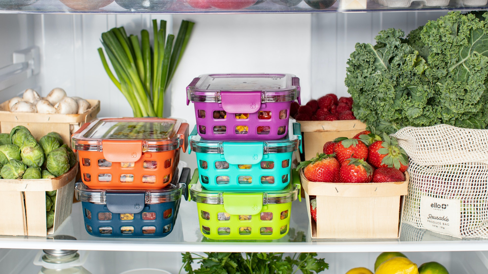

【經濟日報】 每日至少喝1杯奶茶 13歲女患糖尿病脂肪肝
喝含糖飲品要適可而止。內地一名13歲少女每日都會喝1至2杯奶茶或其他含糖飲料，結果發現尿酸過高、有脂肪肝，更確診糖尿病。
2022-11-21
【香港01】 腸胃健康｜肚瀉想嘔吐如何緩解？拆解食物中毒7大原因、常見症狀
新聞常見食物中毒事件，大多是吃到不新鮮的海產或食物所致；但究竟怎麼樣才算食物中毒？只要吃壞肚子就是食物中毒嗎？食物中毒又該如何緩解？
2022-11-21

【香港01】 心肌梗塞｜2種人易陷猝死危機吃10食物預防！心因性休克無關年紀
很多人健康檢查報告出來時，發現自己「出現紅字」都不太理會，但這個隱形殺手不痛不癢，尤其這些都是很重要的訊息。
2022-11-20